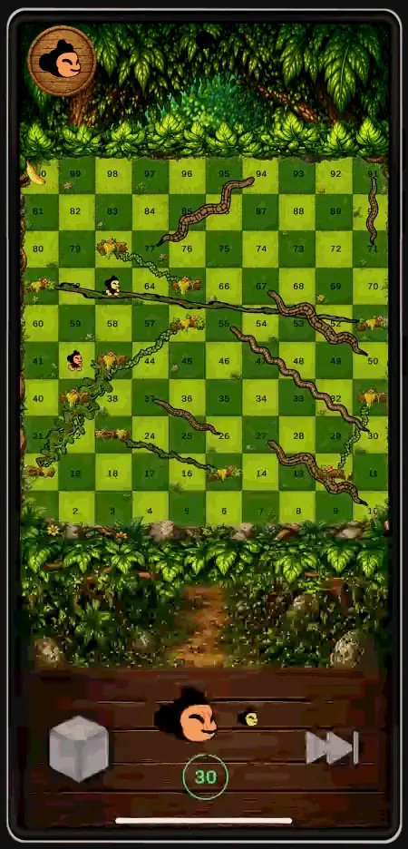
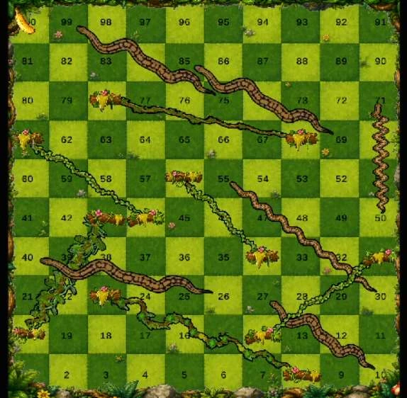

Bangalore
Tier 1 city. Young, English-literate players on Free Fire, Call of Duty: Mobile and other global titles. Complex onboarding and in-game text caused them no trouble.
A text-free multiplayer take on Snakes & Ladders where players drag snakes and vines to reshape the board each turn.
Vines & Vipers is a casual mobile board game built on Snakes & Ladders, a game almost everyone in India already knows. It adds one rule: after you move, you can drag a snake or a vine by the number you rolled. Up to four players play online.
The game has no text in play, so players who can't read English can still pick it up. That constraint came from field research in three places across India, and the rest of the design followed from it.
The download is an Android APK (about 95 MB) for 64-bit phones, so it won't install on iPhone. Android may ask you to allow installs from your browser. The game is multiplayer: one player creates a room and the others join it.
Roll the dice and the token moves
Land on a vine and climb, or on a viper and slide
Drag a snake or vine end by the roll, or skip
A timer ends the turn and play moves on
Ladders became vines, snakes became vipers, and the players became monkeys racing through a jungle to a banana on tile 100. On each turn the active player can move one end of any connector by exactly the number they rolled. That lets them set up a climb for themselves or put a viper in a rival's path.
To win, you must land exactly on tile 100. Overshooting wastes the turn, which keeps the finish tense: players can't just race to the end.

The brief was to design a 2D casual game set in the Indian context, with at least five minutes of play and no copying of established formats such as match-3 or endless runners. I treated casual play as something that comes from players and their everyday situations, not from a genre. I watched people play in three places chosen to cover urban, semi-urban and rural India, and asked who plays, what they play, where, how and why.
Tier 1 city. Young, English-literate players on Free Fire, Call of Duty: Mobile and other global titles. Complex onboarding and in-game text caused them no trouble.
Tier 2 city. Student and working-class players with high digital access that varied by age. Game choices largely matched Bangalore.
A village in the Karur district of Tamil Nadu, and the most useful of the three sites. Players were on mobile versions of Carrom, Rummy and Ludo, plus Subway Surfers and Temple Run. Many could not read English, and play was social even on single-player games, with people watching, commenting and passing the phone around.
Games that needed English to explain themselves went unplayed in Kulithalai. This finding set the main design constraint for the project.
Players who meet unfamiliar rules they can't read don't try to learn them. They leave. Rules that already live in cultural memory need no tutorial.
Subway Surfers works here because you can see that swiping up makes you jump the first time you do it.
Mobile Carrom, Rummy and Ludo skip onboarding and go straight to play.
People watched, commented and passed the phone around. Multiplayer fits behaviour that already exists.
Design opportunity: build on a game Indian players already know, add a strategic layer that gives them real choices, and make it fully playable without any English text.
Snakes & Ladders is known across age groups, regions and literacy levels, so it needs no onboarding. It also gives players no decisions to make, because the dice decide everything. I explored three ways to give players some control over the board.
Drag a snake or a vine by the number on the dice. This adds strategy and keeps the familiar roll-and-move structure.
One-time abilities on special tiles. Players would have to learn icon meanings, which brought back the reading problem.
Action cards drawn each turn. Cards plus a board made a busier interface than the brief needed.
The positions and number of vipers and vines were not decided in advance. They came from repeated playtests with different layouts, and the final board follows three rules.
| Tiles | What the board does |
|---|---|
| 80 – 100 | Only two vipers, so the endgame rewards the leader with a real chance to finish. |
| 30 – 80 | Vipers spread across the mid-board. Most strategic moves happen here. |
| 1 – 30 | Dense vines for fast early progress and fewer frustrating slow starts. |

This was the hardest constraint to build and the most important one to keep. The game teaches itself through three channels. In playtests with no verbal instructions, most new players understood the roll, move and drag cycle within one or two turns.
Glowing drag handles in the edit phase, turn-order indicators, a countdown ring and a full-screen win display.
Separate sounds for the dice roll, a vine climb, a viper slide, the turn timer and the win fanfare.
Tokens and connectors move slowly enough that players can see what caused what.
Research showed who the players were and what they needed. Playtesting showed what the game was doing to them.
Early boards had vipers all the way up to tile 100. With four players, there was a good chance that one of the three trailing players would roll the exact number needed to move a viper onto the leader. Players near tile 90 were sent back, sometimes several times in one round. The ending felt punishing, and it wasn't tense.
I left only two vipers in tiles 80–100 and concentrated the vines in the early board. The match now builds to a clear climax instead of dragging on.
Takeaway: This problem could not have been predicted from the research. It only showed up when I watched four people play at the same time.
Players nearly always grabbed the end that changes the trigger: a viper's head or a vine's base. With both ends of every connector draggable, they weren't sure which to use.
I first hid the other ends, which made the interface clearer. Experienced players then asked for them back: when they had no better move, they shifted a tail or a vine top that they might meet next turn. The final version allows all four ends and gives the trigger ends the strongest visual emphasis.
Takeaway: Hiding options made the interface clearer, but it also took away choices that players wanted. Visual emphasis kept both.
| System | V1 | V2 | V3 · Final |
|---|---|---|---|
| Board layout | Even spread. Long, random-feeling games. | Vines early, vipers mid. Better pacing, but four-player endgames were still harsh. | Vines early, vipers spread out, two near 100. |
| Connector handles | Both ends draggable. Players didn't know which to use. | Only the trigger end. Much clearer. | Both ends, trigger end emphasised. |
| Win condition | Exact roll to land on 100. | Kept. | Kept for endgame tension. |
| Feedback | Basic cues. | Refined sounds and glows. | Full audio set, glow handles, turn indicators and a win screen. |
Built in Unity 6 with C#, laid out in portrait for one-handed play.
Up to four players, using Netcode for GameObjects with Unity Lobby, Relay and Authentication. Players create or join a room. ParrelSync let me test several clients on one machine.
A bot rolls, then prefers to move a viper head away from the tiles it occupies.
The monkey character sprite is from itch.io. All other design, research and programming is mine.
Starting from Snakes & Ladders meant zero onboarding cost, so every design hour went into the new strategic layer.
Research showed who the players were. Playtesting showed what the game did to them. The late-game viper problem only showed up at the table.
Getting players to see that they have a choice, and timing the decision so the game keeps moving, takes the most care.
Most playtesters were digitally literate, so I would test directly with players in Kulithalai to confirm the text-free interface works for its intended audience. The lobby still uses “Create Room” and “Join Room” text. My first plan was a single play button with random matchmaking, but that needed a dedicated server that was outside the project budget.